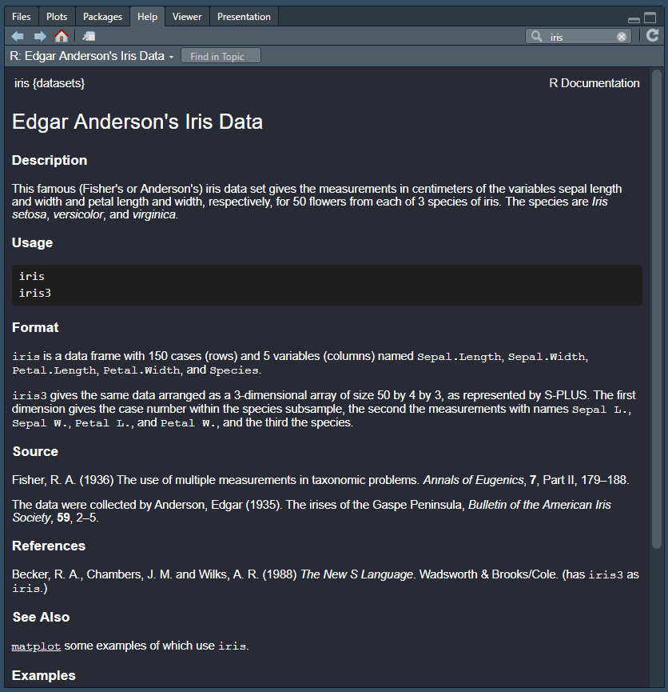

data()8 Included Datasets
R comes with a variety of datasets already built in. This chapter will teach you how to view the catalog of included datasets, preview individual datasets, and begin working with the data.
8.1 View Catalog
You can view the complete list of datasets available along with a brief description for each one by typing “data()” into your console.
This will open a new tab in your RStudio instance that looks similar to the following image:

8.2 Working with Included Data
The first step to begin working with your chosen dataset is to load it into your environment by using the “data” function with the quoted name of your dataset inside the parentheses. In the following example, we’ll attach the “iris” dataset to our environment.
Note
It may not be necessary for you to load your dataset via the “data” function prior to using it. Additionally, some datasets may require you to add them to your search path by using using the “attach” function (conversely, you can remove datasets from your search path by using the “detach” function).
data("iris")This command will add a new object “iris” to our R session. Let’s preview the “iris” dataset by using the “head” function.
head(iris)| Sepal.Length | Sepal.Width | Petal.Length | Petal.Width | Species |
|---|---|---|---|---|
| 5.1 | 3.5 | 1.4 | 0.2 | setosa |
| 4.9 | 3.0 | 1.4 | 0.2 | setosa |
| 4.7 | 3.2 | 1.3 | 0.2 | setosa |
| 4.6 | 3.1 | 1.5 | 0.2 | setosa |
| 5.0 | 3.6 | 1.4 | 0.2 | setosa |
| 5.4 | 3.9 | 1.7 | 0.4 | setosa |
Finally, you can view more information about any given dataset by typing its name into the “Help” tab in the “Files” pane.

8.3 Common Datasets
Here are a few other datasets commonly used in the R community to practice and to teach.
8.3.1 mtcars
head(mtcars)| mpg | cyl | disp | hp | drat | wt | qsec | vs | am | gear | carb | |
|---|---|---|---|---|---|---|---|---|---|---|---|
| Mazda RX4 | 21.0 | 6 | 160 | 110 | 3.90 | 2.620 | 16.46 | 0 | 1 | 4 | 4 |
| Mazda RX4 Wag | 21.0 | 6 | 160 | 110 | 3.90 | 2.875 | 17.02 | 0 | 1 | 4 | 4 |
| Datsun 710 | 22.8 | 4 | 108 | 93 | 3.85 | 2.320 | 18.61 | 1 | 1 | 4 | 1 |
| Hornet 4 Drive | 21.4 | 6 | 258 | 110 | 3.08 | 3.215 | 19.44 | 1 | 0 | 3 | 1 |
| Hornet Sportabout | 18.7 | 8 | 360 | 175 | 3.15 | 3.440 | 17.02 | 0 | 0 | 3 | 2 |
| Valiant | 18.1 | 6 | 225 | 105 | 2.76 | 3.460 | 20.22 | 1 | 0 | 3 | 1 |
8.3.2 faithful
head(faithful)| eruptions | waiting |
|---|---|
| 3.600 | 79 |
| 1.800 | 54 |
| 3.333 | 74 |
| 2.283 | 62 |
| 4.533 | 85 |
| 2.883 | 55 |
8.3.3 ChickWeight
head(ChickWeight)| weight | Time | Chick | Diet |
|---|---|---|---|
| 42 | 0 | 1 | 1 |
| 51 | 2 | 1 | 1 |
| 59 | 4 | 1 | 1 |
| 64 | 6 | 1 | 1 |
| 76 | 8 | 1 | 1 |
| 93 | 10 | 1 | 1 |
8.3.4 Titanic
head(Titanic), , Age = Child, Survived = No
Sex
Class Male Female
1st 0 0
2nd 0 0
3rd 35 17
Crew 0 0
, , Age = Adult, Survived = No
Sex
Class Male Female
1st 118 4
2nd 154 13
3rd 387 89
Crew 670 3
, , Age = Child, Survived = Yes
Sex
Class Male Female
1st 5 1
2nd 11 13
3rd 13 14
Crew 0 0
, , Age = Adult, Survived = Yes
Sex
Class Male Female
1st 57 140
2nd 14 80
3rd 75 76
Crew 192 208.4 Resources
- List of datasets available in Base R: https://www.rdocumentation.org/packages/datasets/versions/3.6.2